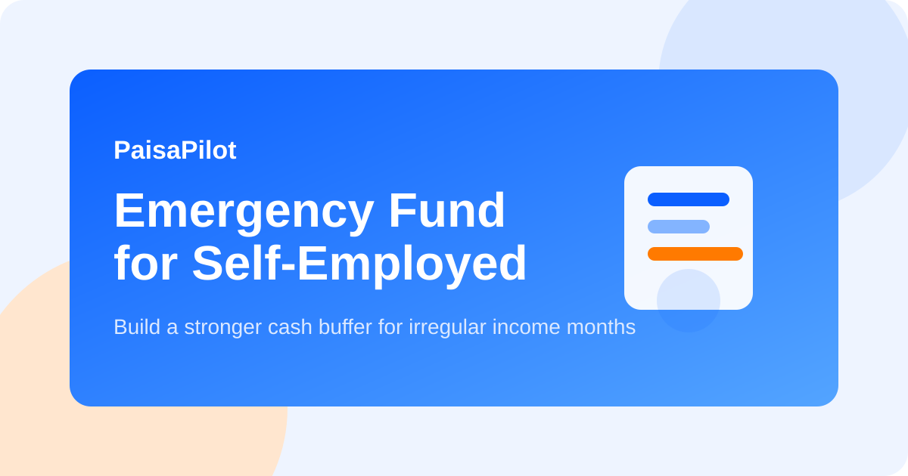

Emergency Fund for Self-Employed People: A Realistic Buffer Plan
Last updated: March 14, 2026

If your income changes every month, a normal three-month emergency fund rule is often too small. Freelancers, shop owners, agents, creators, and small service providers face delayed payments, seasonal demand, and client loss. That means your emergency fund must protect both home expenses and business interruptions.
Quick Answer
Most self-employed people should target 6 to 12 months of essential personal expenses, plus a separate small business buffer for tools, rent, software, or staff payments. Keep this money safe, liquid, and boring.
Why the Standard Rule Often Fails
Salaried people usually know when salary arrives. Self-employed workers do not. One weak month can become three if invoices are delayed or demand falls. If you also use the same bank account for business and home spending, stress compounds quickly.
- Income may be uneven even in good years.
- Clients can pay late without warning.
- Equipment, travel, or supplier costs may continue even during a bad month.
- Health issues can stop both work and cashflow at the same time.
A Practical Target Formula
| Component | What to include |
|---|---|
| Home essentials | Rent, groceries, electricity, EMI, school fees, medicine, transport. |
| Business essentials | Internet, software, helper salary, inventory minimum, office desk or rent. |
| Irregular obligations | Insurance premium, annual renewal, tax advance, maintenance. |
Now choose your buffer level:
- 6 months: stable client base, low fixed costs, some family support.
- 9 months: moderate income swings and one or two major dependents.
- 12 months: highly seasonal work, single-earner household, or heavy obligations.
How to Structure the Fund
Do not keep the entire emergency fund in one place. A layered structure gives access and discipline.
- Layer 1: one month in savings account for immediate use.
- Layer 2: two to three months in sweep-in or liquid-friendly account.
- Layer 3: remaining amount in safe short-duration options such as FD ladder or very liquid low-risk parking.
Separate Personal and Business Buffers
This is one of the biggest quality signals in personal finance behavior. Your home money and business survival money should not be mixed. Use separate accounts if possible.
- Personal emergency fund protects household continuity.
- Business buffer protects work continuity.
- Separation helps you see whether the business is really healthy.
How to Build the Fund Faster
- Fix a monthly base transfer on every payment received.
- During high-income months, save a larger percentage instead of upgrading lifestyle.
- Park tax money separately so you do not confuse it with emergency cash.
- Reduce optional subscriptions and weak recurring expenses.
- Use a floor balance rule: never let the emergency account drop below one defined amount unless there is a genuine emergency.
What Counts as a Real Emergency?
Use the fund for income disruption, medical need, urgent home repair, or unavoidable survival costs. Do not use it for shopping, travel, festival overspending, or a gadget upgrade.
Rebuilding After Use
If you use part of the fund, create a rebuild plan immediately. Direct a fixed percentage of every incoming payment back to the fund until the target is restored.
FAQ
Should I invest this money in equity mutual funds?
No. Emergency money should prioritize stability and fast access over return.
Can I use one credit card as emergency backup?
A card can help with short timing gaps, but it is not a substitute for cash reserves.
What if I am just starting out?
First build one month of essential expenses. Then move toward three months, then six months.
Related Guides
FD Ladder Guide, Bank Statement Review, Side Income System
Editorial Note: Educational information only; not personal financial advice.